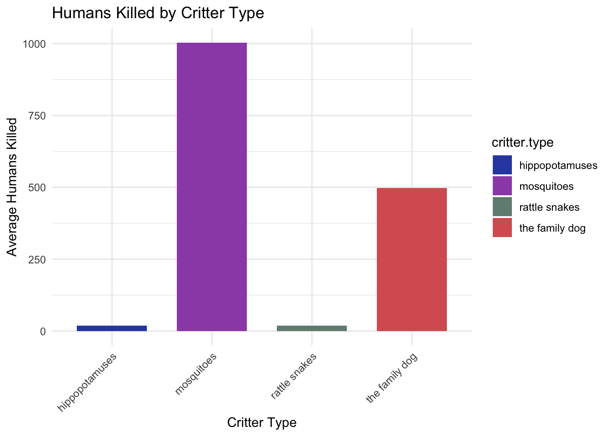
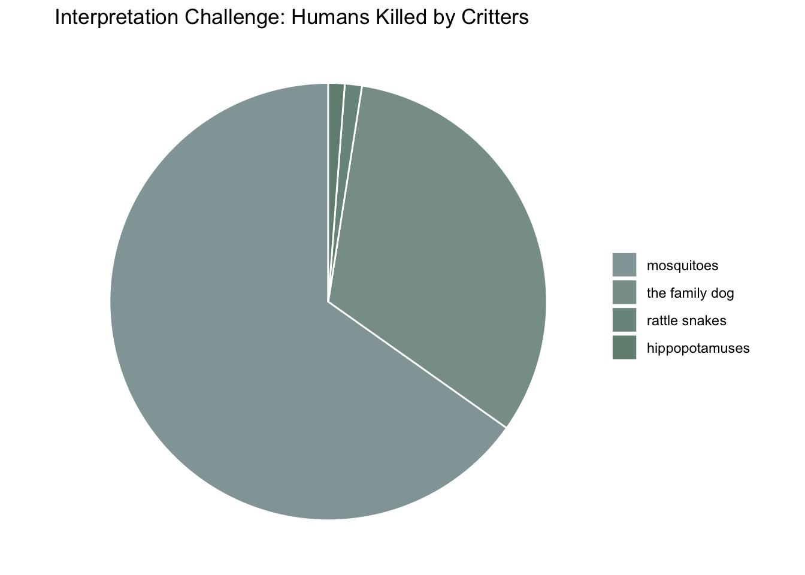
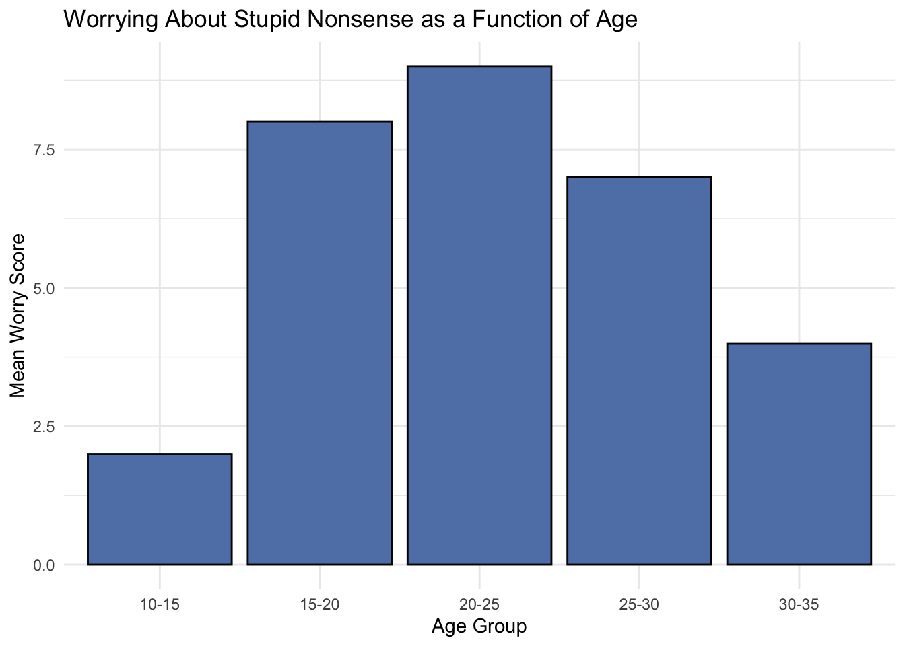
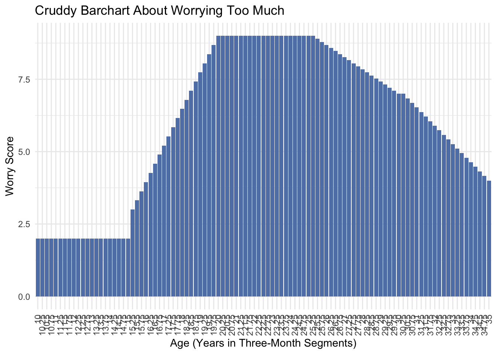
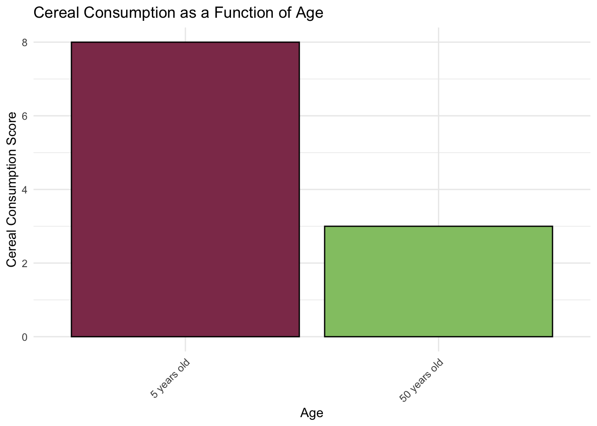
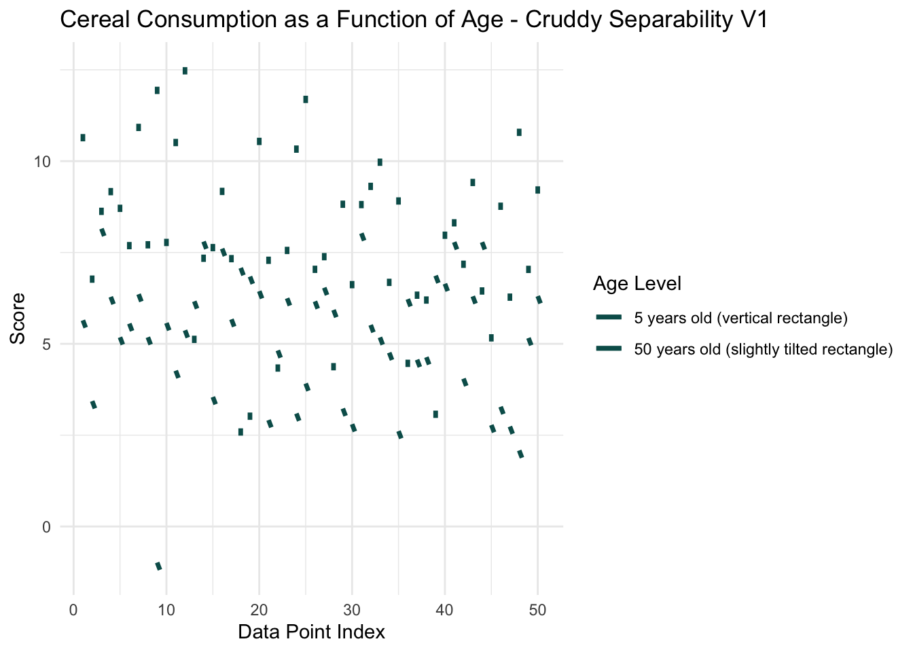
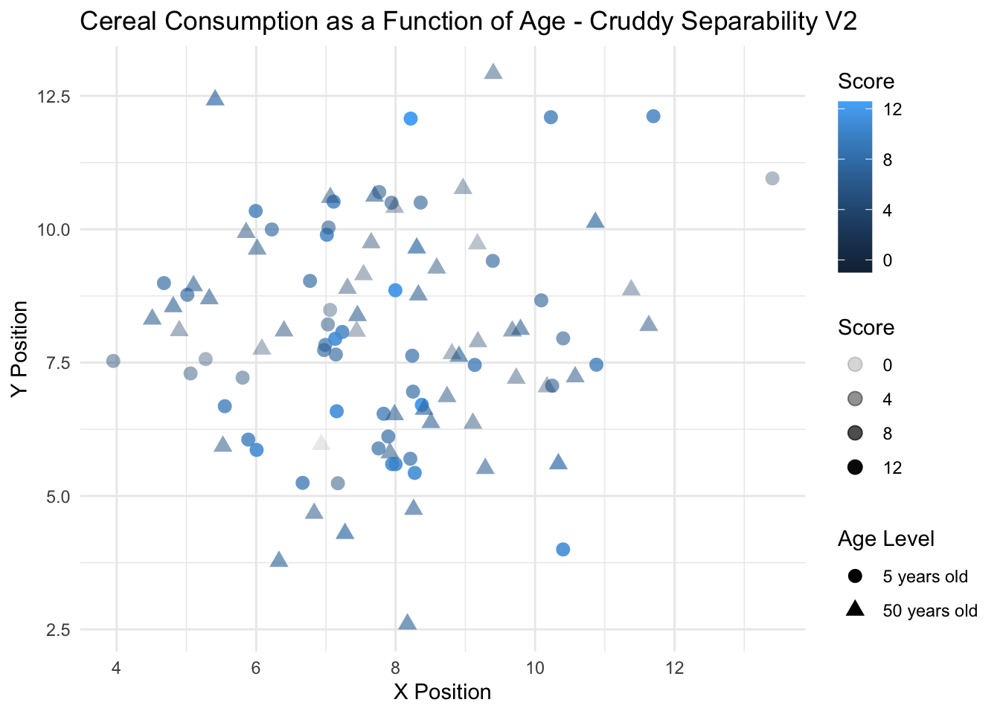
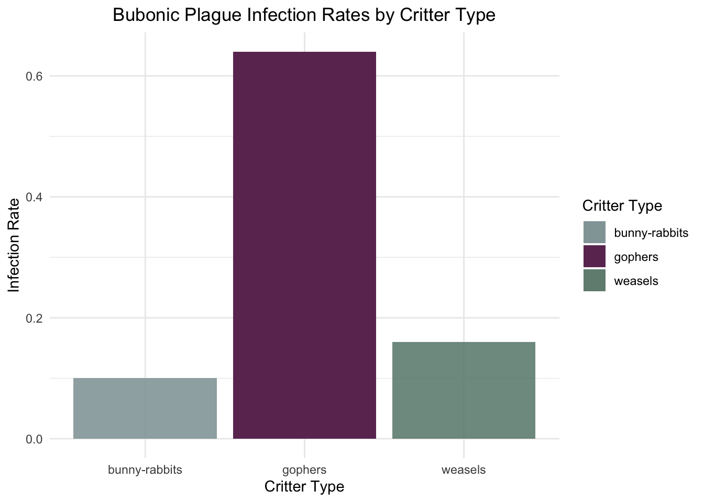
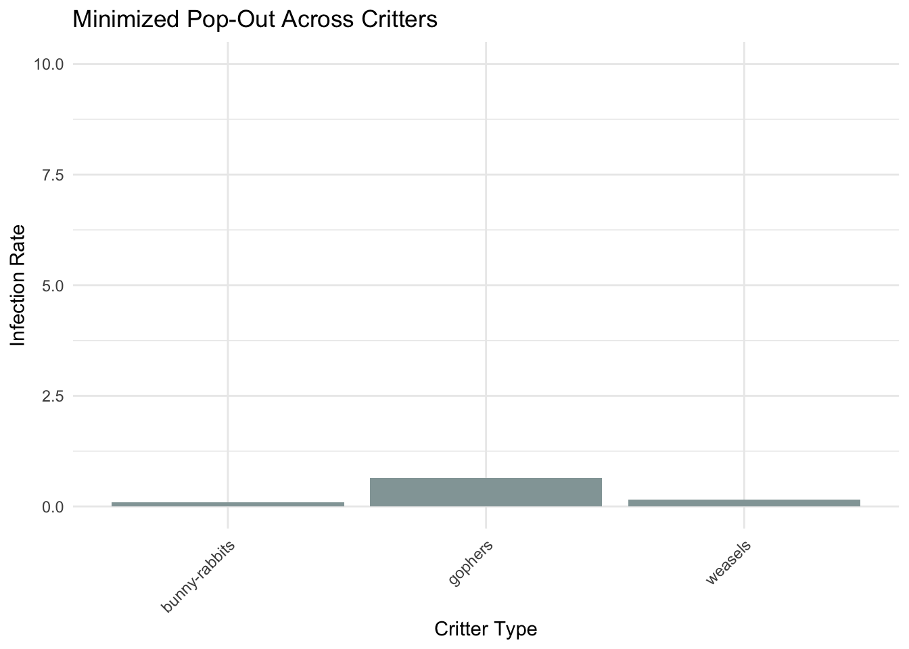

Analyzing the effect of soil parent material on the height/diameter ratio of Douglas fir trees after controlling for mean annual radiation.
Assignment
Dataviz
Author
Konrad Bailey
Published
January 1, 2024
Code
library(ggplot2)library(tidyverse)
── Attaching core tidyverse packages ──────────────────────── tidyverse 2.0.0 ──
✔ dplyr 1.1.4 ✔ readr 2.1.5
✔ forcats 1.0.0 ✔ stringr 1.5.1
✔ lubridate 1.9.3 ✔ tibble 3.2.1
✔ purrr 1.0.2 ✔ tidyr 1.3.0
── Conflicts ────────────────────────────────────────── tidyverse_conflicts() ──
✖ dplyr::filter() masks stats::filter()
✖ dplyr::lag() masks stats::lag()
ℹ Use the conflicted package (<http://conflicted.r-lib.org/>) to force all conflicts to become errors
Code
library(dplyr)#library(plotly)
Expressiveness and Effectiveness
Figure 1
Code
set.seed(42) # For reproducibility# Creating the datasetdeadly.critters <-data.frame(critter.type =rep(c("mosquitoes", "the family dog", "hippopotamuses", "rattle snakes"), each =50),humans.killed =c(rpois(50, lambda =1000), # Mosquitoes have the highest score, using Poisson distribution for count datarpois(50, lambda =500), # The family dog has the second highest scorerpois(50, lambda =20), # Hippopotamuses have lower scoresrpois(50, lambda =20) # Rattle snakes have lower scores, similar to hippopotamuses ))# Viewing the first few rows of the datasethead(deadly.critters)
# Assuming the dataset deadly.critters already exists# Summarizing average humans killed by each critter type for the bar heightsavg_kills <-aggregate(humans.killed ~ critter.type, data = deadly.critters, mean)# Creating the bar chartggplot(avg_kills, aes(x = critter.type, y = humans.killed, fill = critter.type)) +geom_bar(stat ="identity", position =position_dodge(), width =0.7) +scale_fill_manual(values =c("mosquitoes"="#9C51B6", "the family dog"="#D86060", "hippopotamuses"="#324AB2", "rattle snakes"="#708D81")) +labs(title ="Humans Killed by Critter Type",x ="Critter Type", y ="Average Humans Killed") +theme_minimal() +theme(axis.text.x =element_text(angle =45, hjust =1)) # Improve readability of critter type labels

Figure 2
Code
# Summarize data to get total or average humans.killed by critter typesummary_data <- deadly.critters %>%group_by(critter.type) %>%summarise(total_killed =sum(humans.killed)) %>%mutate(percentage = total_killed /sum(total_killed)) %>%arrange(desc(percentage))# Create a factor with levels ordered by the percentage to use in the fill aestheticsummary_data$critter.type <-factor(summary_data$critter.type, levels = summary_data$critter.type)# Manually create a gradient based on the percentage for each critter typegradient_colors <-colorRampPalette(c("#93A5A6", "#708D81"))(n =nrow(summary_data))# Creating a pie chartggplot(summary_data, aes(x ="", y = percentage, fill = critter.type)) +geom_bar(width =1, stat ="identity", color ="white") +coord_polar("y", start =0) +scale_fill_manual(values =setNames(gradient_colors, summary_data$critter.type)) +labs(title ="Interpretation Challenge: Humans Killed by Critters",x =NULL, y =NULL, fill ="Critter Type") +theme_void() +theme(legend.title =element_blank())

This visualization is much less effective than the previous figure. Assessing the most important attribute is obscured by using a pie chart and color coding critter types using similar colors. Additionally the pie chart makes it difficult to discern if any difference in exists between rattle snakes and hippopotamuses.
Discriminability
Figure 3
Code
age_groups <-c('10-15', '15-20', '20-25', '25-30', '30-35')worry_scores <-c(2, 8, 9, 7, 4) # Example scores based on the described trend# Create a data framenonsense.data <-data.frame(Age_Group =factor(age_groups, levels = age_groups),Mean_Worry_Score = worry_scores)# Display the datasetprint(nonsense.data)
# Create the bar chartggplot(nonsense.data, aes(x = Age_Group, y = Mean_Worry_Score, fill ="glaucous green")) +geom_bar(stat ="identity", color ="black", fill ="#6082B6") +# Fill bars with glaucous greenlabs(title ="Worrying About Stupid Nonsense as a Function of Age", x ="Age Group", y ="Mean Worry Score") +theme_minimal() +theme(legend.position ="none") # Hide the legend

Chunking age into five year bins makes it easy to discriminate between particular segments of one’s life and spot trends in worrying about stupid nonsense scores.
Figure 4
Code
# Define the age range in three-month segments as fractions of a yearages <-seq(10, 35, by =0.25)# Initialize worry scores according to the described trendworry_scores <-numeric(length(ages))worry_scores[ages <=15] <-2# Very low scores for ages 10-15worry_scores[ages >15& ages <=20] <-seq(3, 9, length.out =length(worry_scores[ages >15& ages <=20])) # Increase from 15-20worry_scores[ages >20& ages <=25] <-9# High scores 20-25worry_scores[ages >25& ages <=30] <-seq(9, 7, length.out =length(worry_scores[ages >25& ages <=30])) # Decline 25-30worry_scores[ages >30& ages <=35] <-seq(7, 4, length.out =length(worry_scores[ages >30& ages <=35])) # Further decline 30-35# Create the datasetdataset_three_month <-data.frame(Age = ages,Worry_Score = worry_scores)
Code
# Plotggplot(dataset_three_month, aes(x =as.factor(Age), y = Worry_Score)) +geom_bar(stat ="identity", fill ="#6082B6") +# Glaucous green barslabs(title ="Cruddy Barchart About Worrying Too Much",x ="Age (Years in Three-Month Segments)",y ="Worry Score") +theme_minimal() +theme(axis.text.x =element_text(angle =90, hjust =1, vjust =0.5)) +# Rotate x-axis labels for readabilitytheme(legend.position ="none") # Hide the legend

Binning the data into three month segments still depicts the general trend of the data, but it’s cluttered and the x-axis looks terrible.
Separability
Figure 5
Code
# Create the imaginary datasetcereal.data <-data.frame(age =factor(c("5 years old", "50 years old")),cereal.consumption =c(8, 3) # Assuming mean scores for demonstration)
Code
colors <-c("5 years old"="#8E3A59", # Spinel red"50 years old"="#93C572") # Pistachio green# Plotggplot(cereal.data, aes(x = age, y = cereal.consumption, fill = age)) +geom_bar(stat ="identity", color ="black", show.legend =FALSE) +scale_fill_manual(values = colors) +labs(title ="Cereal Consumption as a Function of Age",x ="Age",y ="Cereal Consumption Score") +theme_minimal() +theme(axis.text.x =element_text(angle =45, hjust =1)) # Improve readability

This barchart uses position to convey differences in cereal consumption across the levels for the independent variable age. The two levels of age are differentiated by the fill color of the bars, which is entirely separable from position as a channel.
Figure 6
Code
# Adjusting the example dataset for more overlap, same as beforeset.seed(42) # For reproducibilitydata <-data.frame(Age_Level =factor(rep(c("5 years old", "50 years old"), each =50)),Score =c(rnorm(50, mean =8, sd =2), rnorm(50, mean =5, sd =2)), # More overlapX_Position =rep(1:50, times =2))# Venice green colorvenice_green <-"#055C59"# Creating the plot with the specified updatesggplot(data, aes(x = X_Position, y = Score, group = Age_Level)) +geom_segment(data =subset(data, Age_Level =="5 years old"), aes(xend = X_Position, yend = Score -0.2, color = Age_Level), size =1.2, linetype ="solid") +# Slightly larger lines for visibilitygeom_segment(data =subset(data, Age_Level =="50 years old"), aes(xend = X_Position +0.3, yend = Score -0.2, color = Age_Level), size =1.2, linetype ="solid") +# Slightly offset to simulate "bent"scale_color_manual(name ="Age Level",values =c("5 years old"= venice_green, "50 years old"= venice_green),labels =c("5 years old (vertical rectangle)", "50 years old (slightly tilted rectangle)")) +theme_minimal() +labs(title ="Cereal Consumption as a Function of Age - Cruddy Separability V1", x ="Data Point Index", y ="Score") +theme(legend.position ="right")
Warning: Using `size` aesthetic for lines was deprecated in ggplot2 3.4.0.
ℹ Please use `linewidth` instead.

Code
# Note: Both age levels use the venice green color but the legend explains the line types
Code
set.seed(42) # For reproducibilitycereal.data.V2 <-data.frame(Age_Level =factor(rep(c("5 years old", "50 years old"), each =50)),Score =c(rnorm(50, mean =8, sd =2), rnorm(50, mean =5, sd =2)), # More overlapX_Position =c(rnorm(50, mean =8, sd =2), rnorm(50, mean =8, sd =2)),Y_Position =c(rnorm(50, mean =8, sd =2), rnorm(50, mean =8, sd =2)))
Code
# Create the scatterplotggplot(cereal.data.V2, aes(x = X_Position, y = Y_Position)) +geom_point(aes(shape = Age_Level, color = Score, alpha = Score), size =3) +#scale_shape_manual(values = c("5 years old" = 17, "50 years old" = 15)) + # Assign shapes#scale_color_gradient(low = "blue", high = "red") + # Assign color gradient for Scorelabs(title ="Cereal Consumption as a Function of Age - Cruddy Separability V2",x ="X Position", y ="Y Position",color ="Score", shape ="Age Level") +theme_minimal()

Figure 7
Code
set.seed(42) # Ensure reproducibility# Sample sizesn <-50# Generating data for the categorical independent variable 'critters'critters <-factor(rep(c("gophers", "bunny-rabbits", "weasels"), each = n))# Generating data for the binary dependent variable 'bubonic plague'# with 'gophers' having a much higher infection ratebubonic_plague <-c(rbinom(n, 1, prob =0.8), # High infection rate for 'gophers'rbinom(n, 1, prob =0.2), # Lower infection rate for 'bunny-rabbits'rbinom(n, 1, prob =0.15) # Even lower infection rate for 'weasels')# Creating the data frame and naming it 'bubonic.data'bubonic.data <-data.frame(critters, bubonic_plague)# Viewing the first few rows of 'bubonic.data'head(bubonic.data)
# Calculating the infection rate for each critter typeinfection_rates <- bubonic.data %>%group_by(critters) %>%summarise(Infection_Rate =mean(bubonic_plague)) # since bubonic_plague is 0 for not infected and 1 for infected# Viewing the infection ratesprint(infection_rates)
Warning: The `fun.y` argument of `stat_summary()` is deprecated as of ggplot2 3.3.0.
ℹ Please use the `fun` argument instead.
Warning: The `<scale>` argument of `guides()` cannot be `FALSE`. Use "none" instead as
of ggplot2 3.3.4.

This figure uses the channel position on a common scale, enhanced by a sharp color contrast between the critter type with the highest infection rate and the other two types of critters, to create POP-OUT.
Figure 8
Code
# Calculate the proportion or rate of infection for each critterinfection_rates <- bubonic.data %>%group_by(critters) %>%summarise(Infected_Rate =mean(bubonic_plague), .groups ='drop') # Calculate infection rate# Creating the bar chart with a slightly less distorted scaleggplot(infection_rates, aes(x = critters, y = Infected_Rate, fill = critters)) +geom_bar(stat ="identity", position =position_dodge(), show.legend =FALSE) +scale_fill_manual(values =c("weasels"="#93A5A6", "bunny-rabbits"="#93A5A6", "gophers"="#93A5A6")) +labs(title ="Minimized Pop-Out Across Critters",x ="Critter Type", y ="Infection Rate") +ylim(0, 10) +# Adjust the scale to be less distortedtheme_minimal() +theme(axis.text.x =element_text(angle =45, hjust =1)) # Improve readability of x labels

This bar chart reduces pop-out by distorting the scale of the y-axis and making the color of the bars uniform.
Source Code
---title: 'BCB520: Assignment 04'subtitle: 'Marks and Channels'author: 'Konrad Bailey'#date: 'Spring 2024'#categories: [Assignment, Dataviz]image: DougFir.V2.pngcode-fold: truecode-tools: truedescription: Experimenting with marks and channels to demonstrate good and bad practices in data-visualizaton.---```{r}library(ggplot2)library(tidyverse)library(dplyr)#library(plotly)```## Expressiveness and Effectiveness#### Figure 1```{r}set.seed(42) # For reproducibility# Creating the datasetdeadly.critters <-data.frame(critter.type =rep(c("mosquitoes", "the family dog", "hippopotamuses", "rattle snakes"), each =50),humans.killed =c(rpois(50, lambda =1000), # Mosquitoes have the highest score, using Poisson distribution for count datarpois(50, lambda =500), # The family dog has the second highest scorerpois(50, lambda =20), # Hippopotamuses have lower scoresrpois(50, lambda =20) # Rattle snakes have lower scores, similar to hippopotamuses ))# Viewing the first few rows of the datasethead(deadly.critters)``````{r}# Assuming the dataset deadly.critters already exists# Summarizing average humans killed by each critter type for the bar heightsavg_kills <-aggregate(humans.killed ~ critter.type, data = deadly.critters, mean)# Creating the bar chartggplot(avg_kills, aes(x = critter.type, y = humans.killed, fill = critter.type)) +geom_bar(stat ="identity", position =position_dodge(), width =0.7) +scale_fill_manual(values =c("mosquitoes"="#9C51B6", "the family dog"="#D86060", "hippopotamuses"="#324AB2", "rattle snakes"="#708D81")) +labs(title ="Humans Killed by Critter Type",x ="Critter Type", y ="Average Humans Killed Annually") +theme_minimal() +theme(axis.text.x =element_text(angle =45, hjust =1)) # Improve readability of critter type labels```#### Figure 2```{r}# Summarize data to get total or average humans.killed by critter typesummary_data <- deadly.critters %>%group_by(critter.type) %>%summarise(total_killed =sum(humans.killed)) %>%mutate(percentage = total_killed /sum(total_killed)) %>%arrange(desc(percentage))# Create a factor with levels ordered by the percentage to use in the fill aestheticsummary_data$critter.type <-factor(summary_data$critter.type, levels = summary_data$critter.type)# Manually create a gradient based on the percentage for each critter typegradient_colors <-colorRampPalette(c("#93A5A6", "#708D81"))(n =nrow(summary_data))# Creating a pie chartggplot(summary_data, aes(x ="", y = percentage, fill = critter.type)) +geom_bar(width =1, stat ="identity", color ="white") +coord_polar("y", start =0) +scale_fill_manual(values =setNames(gradient_colors, summary_data$critter.type)) +labs(title ="Interpretation Challenge: Humans Killed by Critters",x =NULL, y =NULL, fill ="Critter Type") +theme_void() +theme(legend.title =element_blank())```This visualization is much less effective than the previous figure. Assessing the most important attribute is obscured by using a pie chart and color coding critter types using similar colors. Additionally the pie chart makes it difficult to discern if any difference in exists between rattle snakes and hippopotamuses.## Discriminability#### Figure 3```{r}age_groups <-c('10-15', '15-20', '20-25', '25-30', '30-35')worry_scores <-c(2, 8, 9, 7, 4) # Example scores based on the described trend# Create a data framenonsense.data <-data.frame(Age_Group =factor(age_groups, levels = age_groups),Mean_Worry_Score = worry_scores)# Display the datasetprint(nonsense.data)``````{r}# Create the bar chartggplot(nonsense.data, aes(x = Age_Group, y = Mean_Worry_Score, fill ="glaucous green")) +geom_bar(stat ="identity", color ="black", fill ="#6082B6") +# Fill bars with glaucous greenlabs(title ="Worrying About Stupid Nonsense as a Function of Age", x ="Age Group", y ="Mean Worry Score") +theme_minimal() +theme(legend.position ="none") # Hide the legend```Chunking age into five year bins makes it easy to discriminate between particular segments of one's life and spot trends in worrying about stupid nonsense scores.#### Figure 4```{r}# Define the age range in three-month segments as fractions of a yearages <-seq(10, 35, by =0.25)# Initialize worry scores according to the described trendworry_scores <-numeric(length(ages))worry_scores[ages <=15] <-2# Very low scores for ages 10-15worry_scores[ages >15& ages <=20] <-seq(3, 9, length.out =length(worry_scores[ages >15& ages <=20])) # Increase from 15-20worry_scores[ages >20& ages <=25] <-9# High scores 20-25worry_scores[ages >25& ages <=30] <-seq(9, 7, length.out =length(worry_scores[ages >25& ages <=30])) # Decline 25-30worry_scores[ages >30& ages <=35] <-seq(7, 4, length.out =length(worry_scores[ages >30& ages <=35])) # Further decline 30-35# Create the datasetdataset_three_month <-data.frame(Age = ages,Worry_Score = worry_scores)``````{r}# Plotggplot(dataset_three_month, aes(x =as.factor(Age), y = Worry_Score)) +geom_bar(stat ="identity", fill ="#6082B6") +# Glaucous green barslabs(title ="Cruddy Barchart About Worrying Too Much",x ="Age (Years in Three-Month Segments)",y ="Worry Score") +theme_minimal() +theme(axis.text.x =element_text(angle =90, hjust =1, vjust =0.5)) +# Rotate x-axis labels for readabilitytheme(legend.position ="none") # Hide the legend```Binning the data into three month segments still depicts the general trend of the data, but it's cluttered and the x-axis looks terrible.## Separability#### Figure 5```{r}# Create the imaginary datasetcereal.data <-data.frame(age =factor(c("5 years old", "50 years old")),cereal.consumption =c(8, 3) # Assuming mean scores for demonstration)``````{r}colors <-c("5 years old"="#8E3A59", # Spinel red"50 years old"="#93C572") # Pistachio green# Plotggplot(cereal.data, aes(x = age, y = cereal.consumption, fill = age)) +geom_bar(stat ="identity", color ="black", show.legend =FALSE) +scale_fill_manual(values = colors) +labs(title ="Cereal Consumption as a Function of Age",x ="Age",y ="Cereal Consumption Score") +theme_minimal() +theme(axis.text.x =element_text(angle =45, hjust =1)) # Improve readability```This barchart uses position to convey differences in cereal consumption across the levels for the independent variable age. The two levels of age are differentiated by the fill color of the bars, which is entirely separable from position as a channel.#### Figure 6```{r}# Adjusting the example dataset for more overlap, same as beforeset.seed(42) # For reproducibilitydata <-data.frame(Age_Level =factor(rep(c("5 years old", "50 years old"), each =50)),Score =c(rnorm(50, mean =8, sd =2), rnorm(50, mean =5, sd =2)), # More overlapX_Position =rep(1:50, times =2))# Venice green colorvenice_green <-"#055C59"# Creating the plot with the specified updatesggplot(data, aes(x = X_Position, y = Score, group = Age_Level)) +geom_segment(data =subset(data, Age_Level =="5 years old"), aes(xend = X_Position, yend = Score -0.2, color = Age_Level), size =1.2, linetype ="solid") +# Slightly larger lines for visibilitygeom_segment(data =subset(data, Age_Level =="50 years old"), aes(xend = X_Position +0.3, yend = Score -0.2, color = Age_Level), size =1.2, linetype ="solid") +# Slightly offset to simulate "bent"scale_color_manual(name ="Age Level",values =c("5 years old"= venice_green, "50 years old"= venice_green),labels =c("5 years old (vertical rectangle)", "50 years old (slightly tilted rectangle)")) +theme_minimal() +labs(title ="Cereal Consumption as a Function of Age - Cruddy Separability V1", x ="Data Point Index", y ="Score") +theme(legend.position ="right")# Note: Both age levels use the venice green color but the legend explains the line types``````{r}set.seed(42) # For reproducibilitycereal.data.V2 <-data.frame(Age_Level =factor(rep(c("5 years old", "50 years old"), each =50)),Score =c(rnorm(50, mean =8, sd =2), rnorm(50, mean =5, sd =2)), # More overlapX_Position =c(rnorm(50, mean =8, sd =2), rnorm(50, mean =8, sd =2)),Y_Position =c(rnorm(50, mean =8, sd =2), rnorm(50, mean =8, sd =2)))``````{r}# Create the scatterplotggplot(cereal.data.V2, aes(x = X_Position, y = Y_Position)) +geom_point(aes(shape = Age_Level, color = Score, alpha = Score), size =3) +#scale_shape_manual(values = c("5 years old" = 17, "50 years old" = 15)) + # Assign shapes#scale_color_gradient(low = "blue", high = "red") + # Assign color gradient for Scorelabs(title ="Cereal Consumption as a Function of Age - Cruddy Separability V2",x ="X Position", y ="Y Position",color ="Score", shape ="Age Level") +theme_minimal()```## Pop-Out#### Figure 7```{r}set.seed(42) # Ensure reproducibility# Sample sizesn <-50# Generating data for the categorical independent variable 'critters'critters <-factor(rep(c("gophers", "bunny-rabbits", "weasels"), each = n))# Generating data for the binary dependent variable 'bubonic plague'# with 'gophers' having a much higher infection ratebubonic_plague <-c(rbinom(n, 1, prob =0.8), # High infection rate for 'gophers'rbinom(n, 1, prob =0.2), # Lower infection rate for 'bunny-rabbits'rbinom(n, 1, prob =0.15) # Even lower infection rate for 'weasels')# Creating the data frame and naming it 'bubonic.data'bubonic.data <-data.frame(critters, bubonic_plague)# Viewing the first few rows of 'bubonic.data'head(bubonic.data)``````{r}# Calculating the infection rate for each critter typeinfection_rates <- bubonic.data %>%group_by(critters) %>%summarise(Infection_Rate =mean(bubonic_plague)) # since bubonic_plague is 0 for not infected and 1 for infected# Viewing the infection ratesprint(infection_rates)``````{r}ggplot(bubonic.data, aes(x = critters, y = bubonic_plague, fill = critters)) +stat_summary(fun.y ="mean", geom ="bar", position ="dodge", aes(alpha = critters)) +scale_fill_manual(values =c("gophers"="#6C3461", "weasels"="#708D81", "bunny-rabbits"="#93A5A6")) +scale_alpha_manual(values =c("gophers"=1, "weasels"=0.9, "bunny-rabbits"=0.9)) +labs(title ="Bubonic Plague Infection Rates by Critter Type",x ="Critter Type", y ="Infection Rate") +theme_minimal() +theme(plot.title =element_text(hjust =0.5)) +guides(fill =guide_legend(title ="Critter Type"), alpha =FALSE) # Remove alpha legend```This figure uses the channel position on a common scale, enhanced by a sharp color contrast between the critter type with the highest infection rate and the other two types of critters, to create POP-OUT.#### Figure 8```{r}# Calculate the proportion or rate of infection for each critterinfection_rates <- bubonic.data %>%group_by(critters) %>%summarise(Infected_Rate =mean(bubonic_plague), .groups ='drop') # Calculate infection rate# Creating the bar chart with a slightly less distorted scaleggplot(infection_rates, aes(x = critters, y = Infected_Rate, fill = critters)) +geom_bar(stat ="identity", position =position_dodge(), show.legend =FALSE) +scale_fill_manual(values =c("weasels"="#93A5A6", "bunny-rabbits"="#93A5A6", "gophers"="#93A5A6")) +labs(title ="Minimized Pop-Out Across Critters",x ="Critter Type", y ="Infection Rate") +ylim(0, 10) +# Adjust the scale to be less distortedtheme_minimal() +theme(axis.text.x =element_text(angle =45, hjust =1)) # Improve readability of x labels```This bar chart reduces pop-out by distorting the scale of the y-axis and making the color of the bars uniform.